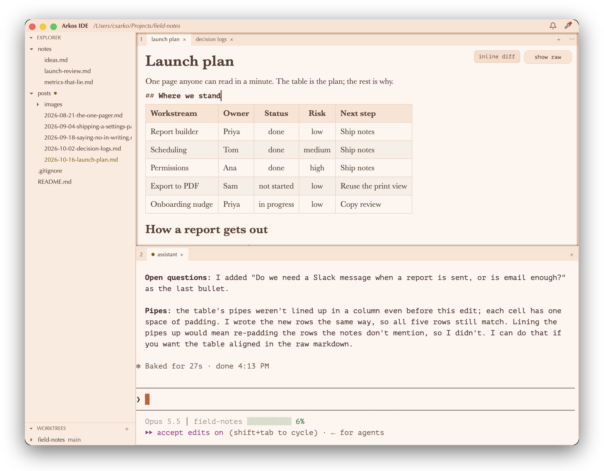
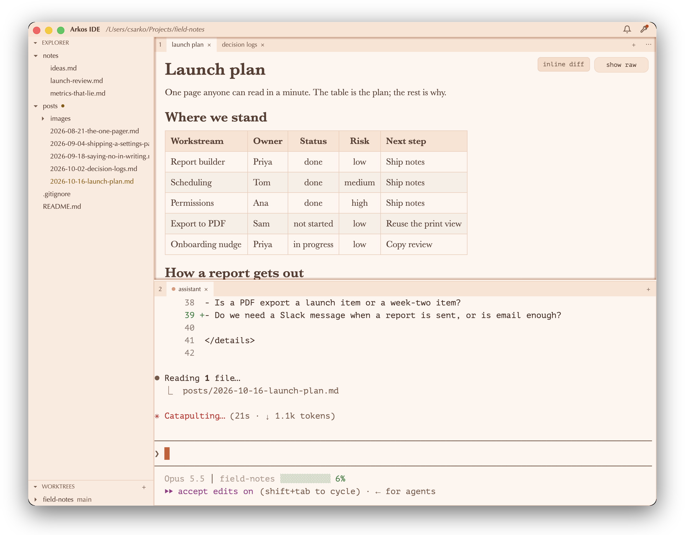
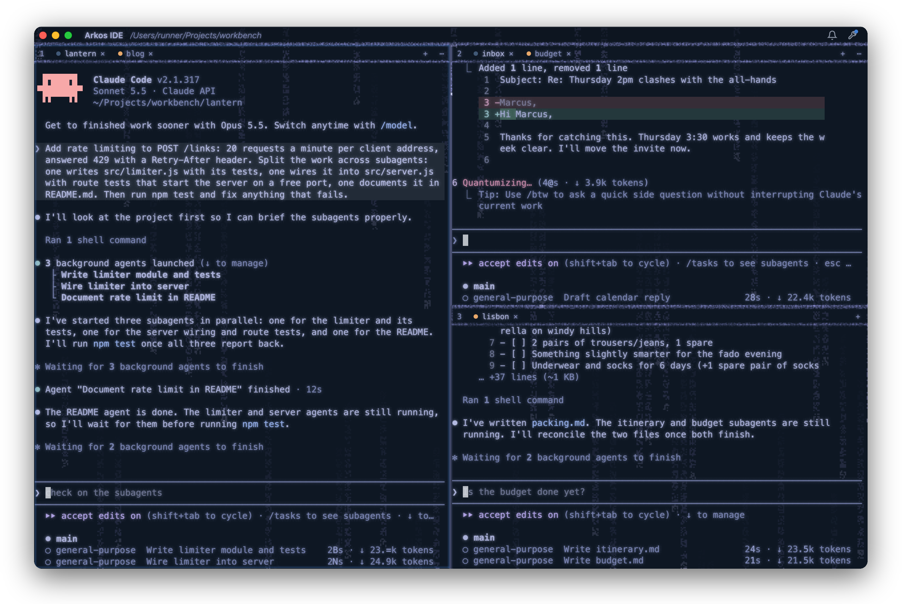
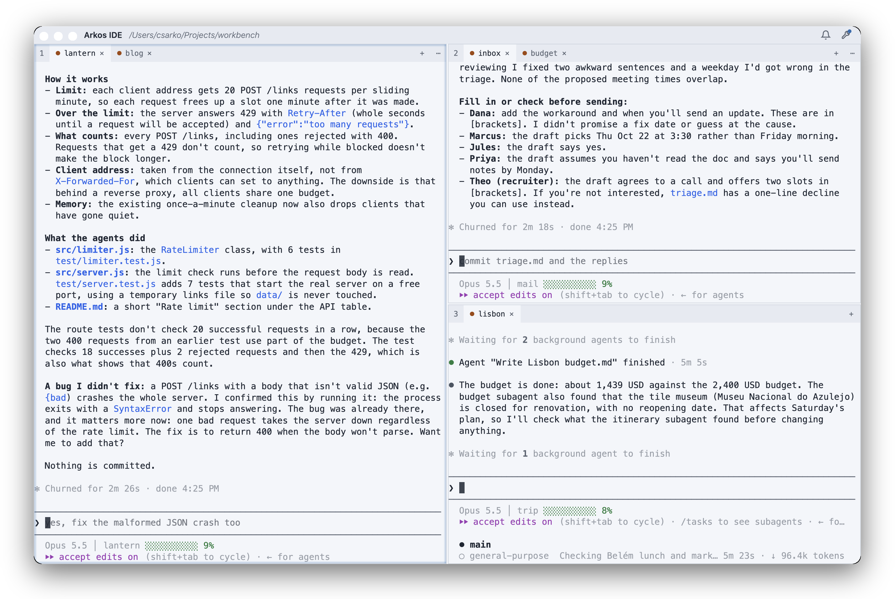

The same launch plan and session, one above the other: the file on top with the caret in it (the heading under the caret shows its markdown source, the rest stays rendered), Claude Code below. Click a frame to open it full size.


Each of the two big panes carries a second, short session on an unrelated workstream (a blog, a household budget) behind the long one: it has finished and waits on you (the orange mark on the inactive tab) while the front session works (the blue mark).

